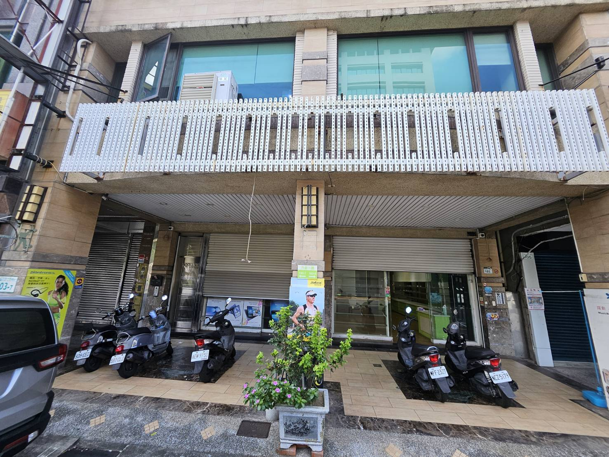
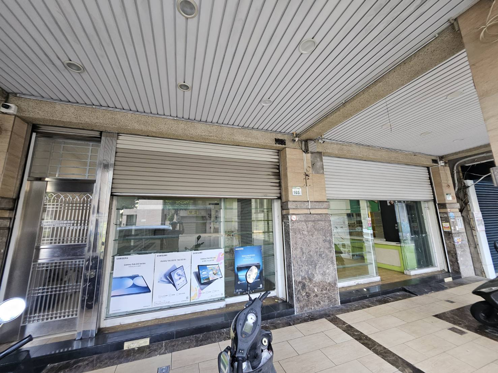
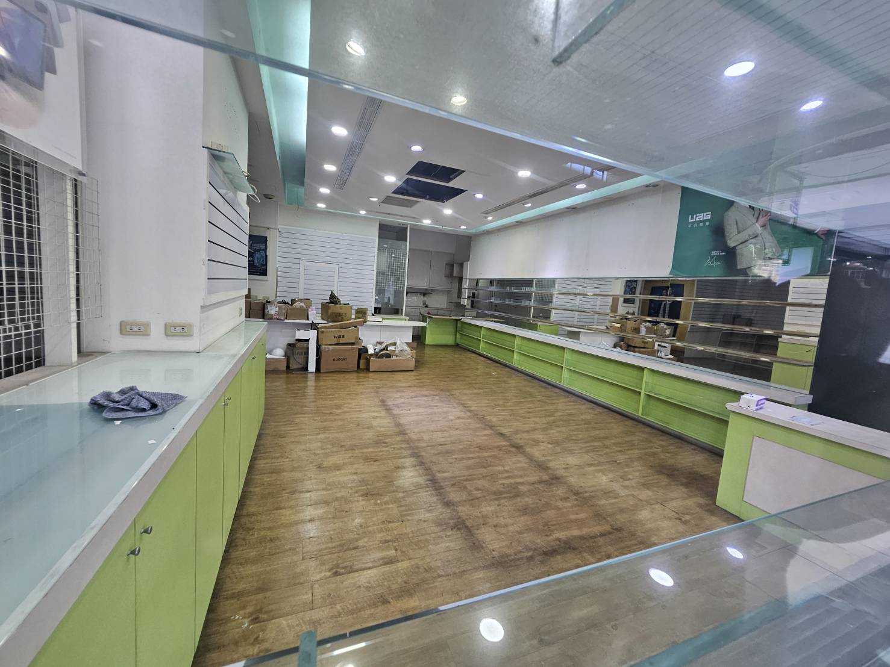
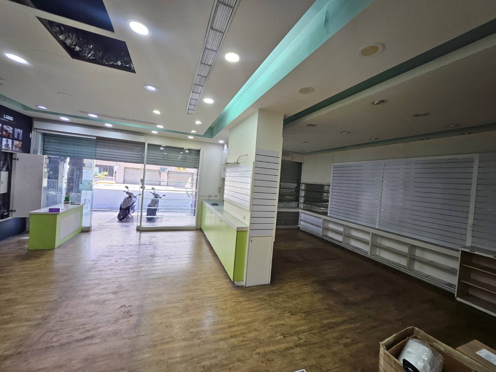
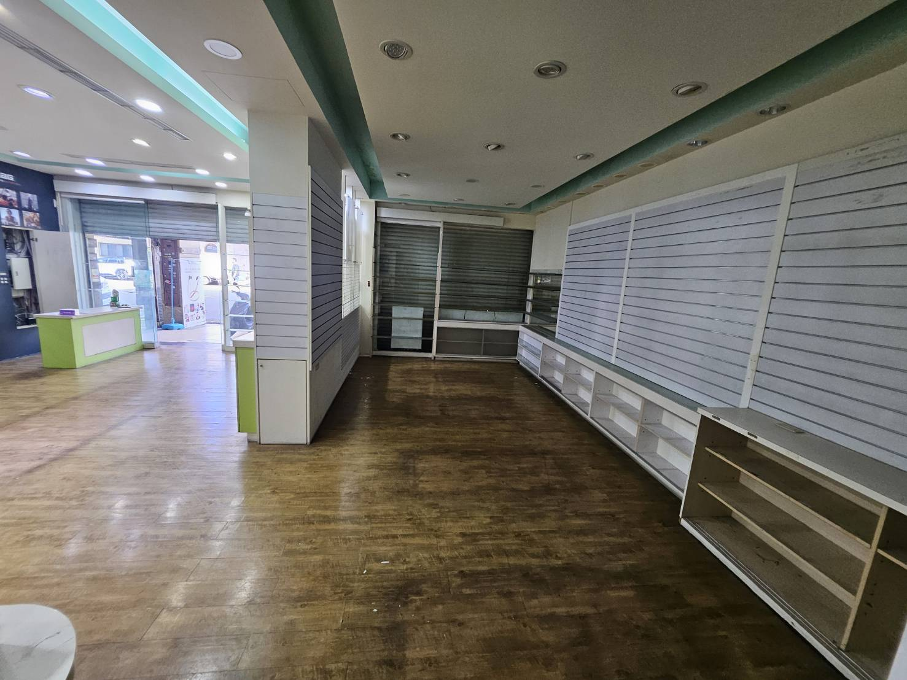
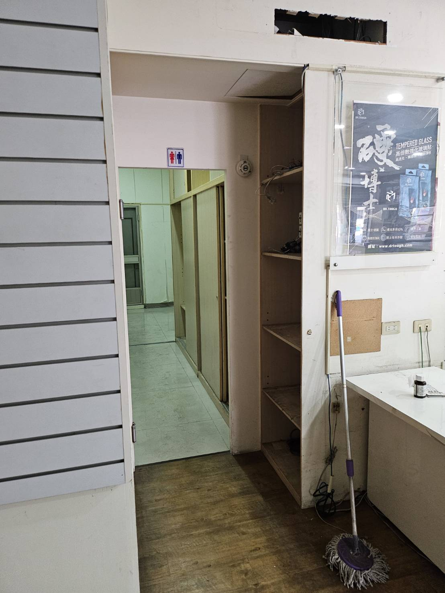
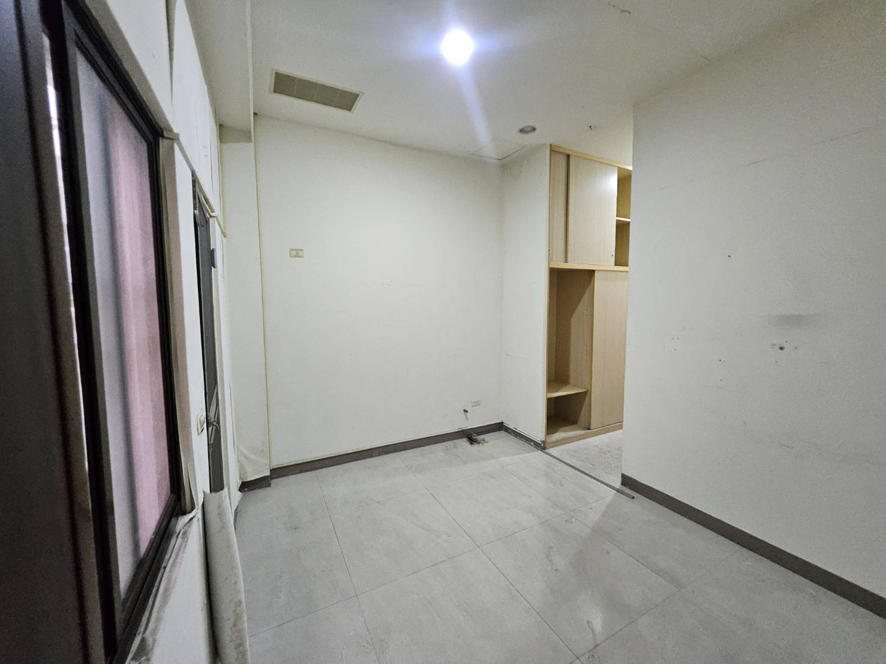
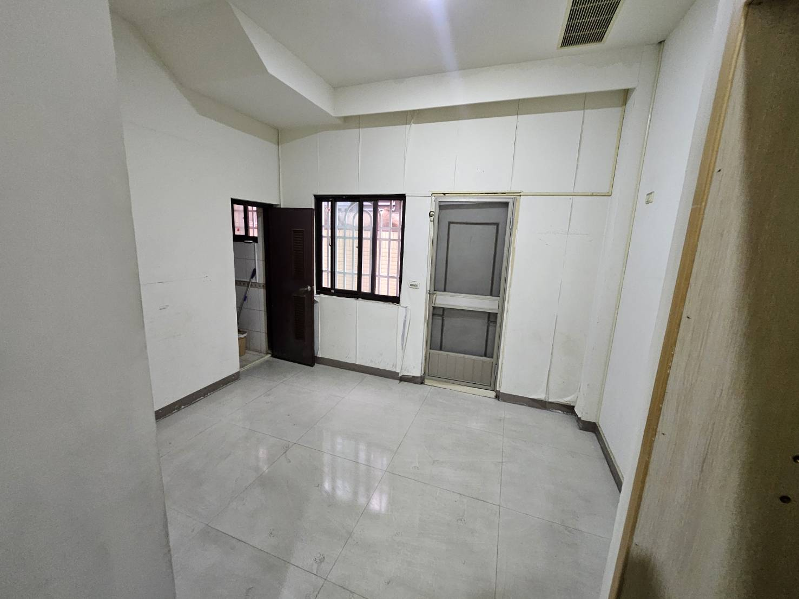
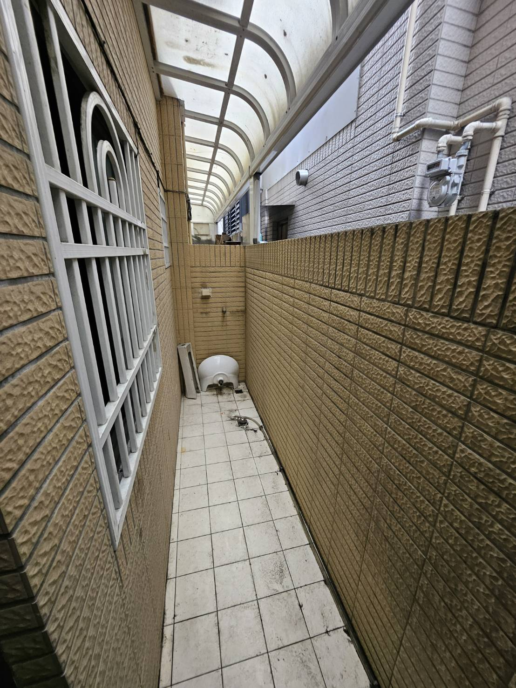

打造兼具「尊榮體驗展示」與「高效售後後勤」的複合基地
本案基地室內實坪約 30 坪（面寬 8.6 米 × 縱深 14.2 米），原為通訊行門市。本企劃將空間重構為四大核心機能： 展示體驗廚房、多功能辦公會議室、專業設備維修室與倉儲物流庫。 實現前台吸睛接單、中台專業研討、後台快速出貨與技術維修的一站式基地。
平面配置圖與熱點點閱導覽
點擊下方平面圖上的「彩色定位點」或快速切換標籤，即可檢視該區現況、規劃重點與設備需求。

現場實勘狀況 vs 改造工程標註
現況照片實拍（2026-10-11 勘查），盤點原通訊行裝潢待拆除與管線現況。

01 門面外觀臨路一樓店面・雙鐵捲門
正面寬闊，雙店面面寬。門前可停放機車與臨時裝卸貨車輛，二樓有橫式招牌骨架可更換全新企業形象招牌。

02 騎樓門口騎樓深邃・大面積玻璃帷幕
騎樓地磚保持良好。進門玻璃自動門與展示大玻璃透光性強，站在騎樓即可直視內部展示廚房與中島亮點。

03 前區全景前展區現況（原通訊行櫃體）
天花板高挑平整，已有盒燈與嵌燈；地面為木紋塑膠地板。中央可見 Pacojet 設備紙箱，兩側為綠白色通訊矮櫃。

04 望向大門室內開闊度極佳・通透明亮
從走廊回望大門，空間深度十足。左側為未來多功能會議區，右側為未來中島展示廚房，自然採光充沛。

05 右側展示牆右側大面凹槽掛板與展示矮櫃
現有牆面全為手機配件凹槽板，長達 6 米。此位置正是設計師規劃「廚具設備展示櫃」的關鍵背牆。

06 走道過渡區前後區樞紐・通往維修與倉儲
走道鋪設拋光石英磚，上方設有洗手間標示。此處為前台展示區進入後勤維修與倉儲區的關鍵通道。

07 後方隔間A (活用空間)深長型獨立房間・現有衣櫃收納
即設計師圖右後「活用空間（3.7m × 6.2m）」，地坪為乾淨地磚，有開窗與既有高櫃。非常方正寬敞。

08 後方隔間B (茶水作業區)設有對外窗、通風門與現成排水
即設計師圖左後「儲物茶水間」，門外連接後陽台防火巷，通風採光良好，並附帶專屬獨立衛浴。

09 後陽台天井通風採光天井・瓦斯表與外機空間
長型後陽台，上方有採光罩與排風通風。設有排水孔與瓦斯表，可放置空調室外機與空壓機主機。
四大核心區域規劃與設備導入規格表
針對商用餐飲與專業設備營運模式，精確配置水電、排煙、網路與實體設備。
區域一：展示體驗廚房（Demo & Showroom Kitchen）
進門右側架高地板區｜約 9.6 坪｜高視覺衝擊力、客戶實機試菜與品牌門面
空間規劃重點
- ▸ 架高木地板（約 15-20cm）：完美隱藏三相四線高載重電線槽、給排水管線與冷凝排管，免打地磚破壞結構。
- ▸ 斜角不鏽鋼中島吧台：配置 4-6 席吧台高腳椅，主廚可面對面進行烹飪展演與出餐試吃。
- ▸ 背牆設備展示高櫃：嵌入式商用蒸烤箱展示位、耐高溫不鏽鋼背板、暖色重點軌道投射燈。
預計導入設備與工程規格清單
| 設備名稱／項目 | 規格／型號建議 | 電力需求 | 給排水／排氣需求 |
|---|---|---|---|
| 萬能蒸烤箱 (Combisteamer) | RATIONAL iCombi Pro 6-1/1 | 3相 380V / 10.8 kW | 3/4" 軟水進水 + DN50 耐熱排水 + UltraVent 冷凝罩 |
| 急速冷凍櫃 (Blast Chiller) | 商用 5盤 / 10盤 急速冷凍冷藏櫃 | 單相 220V / 1.5 kW | 冷凝水接排水孔 |
| 微磨冷凍粉碎機 | Pacojet 4 旗艦機型 | 單相 110V / 220V (1.5 kW) | 獨立穩定專用插座 |
| 中島商用感應電磁爐 | 雙口平面大功率電磁爐 (3.5kW × 2) | 單相 220V / 32A | 下嵌式進出通風散熱口 |
| 前置軟水淨水系統 | 商用離子交換樹脂軟水器 + 活性碳 | 110V (自動反洗控制頭) | 自來水進水 + 軟水輸出至蒸烤箱 |
| 中島洗滌水槽與油脂截留 | 不鏽鋼單大槽 + 小型不鏽鋼截油槽 | — | 冷熱進水 + 截油槽防臭落水頭 |
區域二：辦公與多功能會議室（Office & Conference Center）
進門左側多功能區｜約 7.5 坪｜業務商談、6-8人會議、日常辦公與投影簡報
空間規劃重點
- ▸ 長虹玻璃隔音隔屏／連動拉門：阿噗強烈建議增設，讓會議時能隔絕右側中島洗滌操作的噪音，洽談更有尊榮隱密感。
- ▸ 8人實木會議大桌：桌面內嵌隱藏式彈出型多功能線槽盒（HDMI、Type-C、110V、RJ45 網路）。
- ▸ 主管/辦公專屬工位：深處配置 2-3 組主管與行政辦公桌椅，背後設資料文件收納高櫃。
預計導入設備與工程規格清單
| 設備名稱／項目 | 規格／型號建議 | 電力需求 | 弱電／網路需求 |
|---|---|---|---|
| 簡報顯示系統 | 75 吋 4K 智慧商用顯示器 / 電子白板 | 110V 獨立插座 | 預留牆內 HDMI 穿線管 + Wi-Fi 6 無線投屏 |
| 視訊會議設備 | Logitech Rally Bar 一體式視訊攝影機 | 110V 供電 | Cat6 實體網路線 (POE+ 或標準網孔) |
| 會議桌多功能集線盒 | 桌面電動/阻尼緩開插座模組 | 110V 雙迴路 (防跳電) | RJ45 雙網孔 + USB 智慧快充孔 |
| 辦公區文件展示櫃 | 客製木作/鐵道風低甲醛高身收納櫃 | 預留局部 LED 燈條 110V | — |
區域三：專業設備維修室（Service & Repair Lab）
後方左側獨立隔間｜約 5.4 坪｜設備拆解、水電路測試、零件清潔與售後技術支援
空間規劃重點
- ▸ 獨立實體隔間優勢：有效阻隔維修工具敲擊、氣動螺絲起子與高壓水槍噪音，門外客戶全無察覺。
- ▸ 多電壓安全測試台：配置專用漏電保護配電箱，提供 110V、單相 220V、三相 220V、三相 380V 插座，供各品牌機器上電測試。
- ▸ 清洗測試水槽與地排：利用原茶水間現有給水與地面排水孔，設置不鏽鋼清洗槽以測試水路漏水與除水垢。
預計導入設備與工程規格清單
| 設備名稱／項目 | 規格／型號建議 | 電力需求 | 氣動／排水／環境需求 |
|---|---|---|---|
| 重型不鏽鋼維修工作台 | 耐重 500kg 實木/不鏽鋼複合工作桌 (200×90cm) | 桌上附 6組 110V/220V 專用插座 | 桌面鋪設耐酸鹼防滑防刮橡膠墊 |
| 牆面模組化工具洞洞板 | 金屬 Pegboard 工具掛板 (扳手、電表、螺絲起子) | — | 加裝專用高演色 LED 檢修檯燈 |
| 機台測試綜合配電板 | 獨立分電箱 (附電流表、電壓表、漏電斷路器) | 110V / 220V / 380V (三相) | 緊急紅色 E-STOP 斷電按鈕 |
| 無油靜音空壓機系統 | 主機置於後陽台，室內設置氣動快速接頭 | 單相 220V (後陽台插座) | 高壓氣管穿牆入室內，供應吹塵槍 |
| 超音波零件清洗槽 | 15L~30L 工業級加熱型超音波清洗機 | 110V / 1.2 kW (加熱型) | 緊鄰水槽，清洗後廢水直排水管 |
區域四：倉儲物流與備品庫（Storage & Parts Warehouse）
後方右側活用空間｜約 7.5 坪｜整機設備庫存、原廠維修零件儲位、打包出貨區
空間規劃重點
- ▸ 縱深 6.2 米大容量空間：可依「U型貨架動線」配置兩側高層貨架，中間預留 1.2 米拖車走道。
- ▸ 零件分流儲位系統：左側設置高密度零件盒櫃（放加熱管、感溫棒、主機板、馬達等昂貴備品）。
- ▸ 出貨檢驗打包作業台：門口旁設 120cm 打包台，配備條碼機、封箱膠帶與寄件緩衝材。
預計導入設備與工程規格清單
| 設備名稱／項目 | 規格／型號建議 | 電力需求 | 載重／結構規格 |
|---|---|---|---|
| 重型中量級倉儲貨架 | 免螺絲重型角鋼架 (高210 × 寬180 × 深60cm) 4組 | — | 單層耐重 250-300kg |
| 原廠零配件分類箱櫃 | 快取抽屜式零件櫃 (48抽 / 64抽 附標籤卡) | — | 防塵防潮收納盒 |
| 物流油壓搬運升降台車 | 腳踏升降油壓手推車 (耐重 300kg，提升高90cm) | — | PU 靜音輪，不傷室內拋光石英磚 |
| 出貨打包與秤重作業台 | 鋼製打包作業桌 + 150kg 電子地秤 | 110V 獨立插座 | 配置熱感應出單標籤印表機 |
給老闆的 5 大關鍵工程與營運優化建議
設計師初步平面圖掌握了良好架構，但針對「餐飲專業設備展示」與「售後檢修後勤」的特殊工種，阿噗深入推演提出以下 5 點優化方案，可為公司省下未來昂貴的二次改裝成本：
用電容量增容（向台電申請三相四線）
現場原通訊行用電為一般單相三線（110V/220V）。一台 RATIONAL 6盤萬能蒸烤箱滿載約 10.8 kW，加上感應爐 (7kW) 與冷氣，一般電箱必跳電。
阿噗建議： 租約確定後，第一時間委託甲級水電技工向台電申請增容至「三相四線 220V/380V，契約容量至少 25kW~40kW」，避免日後機台無法全載運轉。
展示廚房排煙破局方案：直上原廠冷凝罩
設計師將中島放在臨大門右側，如果硬拉排油煙風管到後天井，管線長達 14 米，風阻極大且吊頂會嚴重壓迫空間感。
阿噗建議： 展示蒸烤箱選配「RATIONAL 原廠 UltraVent 冷凝吸氣罩」，無須外接排煙管，蒸氣異味內部水冷循環過濾，兼顧省工程款、低噪音與天花板美觀！
會議室加裝「長虹玻璃拉門」，實現動靜隔離
原圖多功能空間為全開放式。但當右側展示廚房有客戶試吃、咖啡機磨豆，或維修室在試車時，辦公與會議將受到干擾。
阿噗建議： 沿著梯間柱位加裝「黑色細鋁框＋長虹隔音清玻璃四連動拉門」。平常全開採光無敵；重要會議拉上隔音 35dB，商務洽談更有隱蔽性與儀式感。
維修室空壓機「外移後陽台」，室內無震動
設備維修必定頻繁使用高壓空氣噴槍（吹除電控板粉塵、清潔管路）。若空壓機放在室內，打氣啟動噪音極度刺耳。
阿噗建議： 將空壓機主機安裝在後陽台天井，後陽台有專用排水與防雨採光罩，僅將高壓 PU 氣管穿牆配管至維修桌，室內安靜舒適。
物流通道防呆：走廊門洞淨寬鎖定 95cm 以上無門檻
商用蒸烤箱木箱包裝寬度常達 85-90cm，若中央走廊或倉庫門框依傳統室內門（75-80cm）施作，將發生「設備進不去倉庫」的重大慘劇！
阿噗建議： 從大門口、中島旁通道、中央走道、至倉庫與維修室的門洞，嚴格要求泥作與木作「門洞淨寬不得低於 95cm」，且全室室內地坪嚴格保持「零門檻、無高低落差」，讓油壓升降台車一人即可順暢推運！
45 天工期階段拆解與里程碑甘特圖
分為五大階段推進，無縫銜接拆除、水電、泥作、木作與設備安裝測試。
階段一：拆除清運與台電增容送件（Day 1 - Day 7）
原通訊行木作櫃體拆除、廢棄物清運、向台電申請三相四線重電審查
階段二：水電配管與基礎泥作（Day 8 - Day 20）
380V/220V 配電箱重拉、中島冷熱給水與截油槽排水預埋、維修室試電配電盤
階段三：木作地坪、空調與玻璃拉門（Day 21 - Day 35）
展示廚房架高地板施作、長虹玻璃會議隔屏安裝、冷氣空調工程、全室油漆批土
階段四：設備進場定位與倉儲貨架組裝（Day 36 - Day 42）
蒸烤箱、急速冷凍、Pacojet進場定位、中島不鏽鋼檯面組裝、重型貨架立架
階段五：設備通電調機測試與試營運（Day 43 - Day 45）
蒸烤箱水質硬度校正、空調與排煙試機、細部清潔完工驗收、開幕品嘗茶會